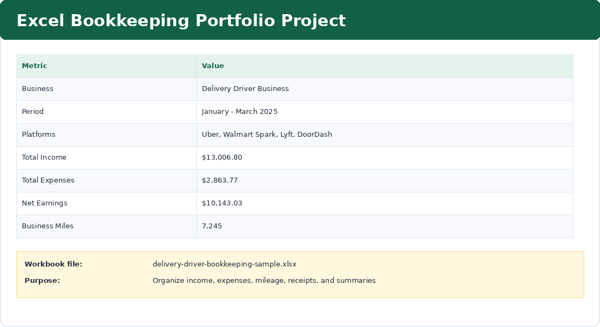

Purpose
Create an organized Excel workbook that tracks delivery income, expenses, mileage, receipts, weekly summaries, monthly summaries, and net earnings for January through March 2025.
Simple Example
The workbook includes platforms such as Uber, Walmart Spark, Lyft, and DoorDash, with separate tabs for income, expenses, mileage, receipt log, weekly summary, and monthly summary.
Simple Bookkeeping Decision Rule
Start by separating the data into clear tabs. Income, expenses, mileage, and receipts should not be mixed in one messy sheet because each category supports a different bookkeeping review.

Analysis
The project covers 3 months of simulated bookkeeping activity for a delivery driver business. The workbook summary shows total income of $13,006.80, total expenses of $2,863.77, net earnings of $10,143.03, and 7,245 business miles.
Result
The Excel workbook is organized and ready for bookkeeping review, budgeting, monthly summary preparation, and tax-support documentation.